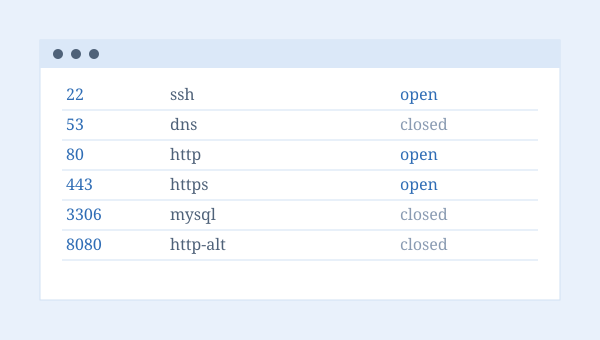

I
Network Vulnerability Scanner
A lightweight Python port and service scanner that finds open ports and helps check the security of a local network.
Project details
The scanner connects to a range of ports, reports which are open and names the common services running on them. It taught me how TCP connections work and why closing unused ports matters.